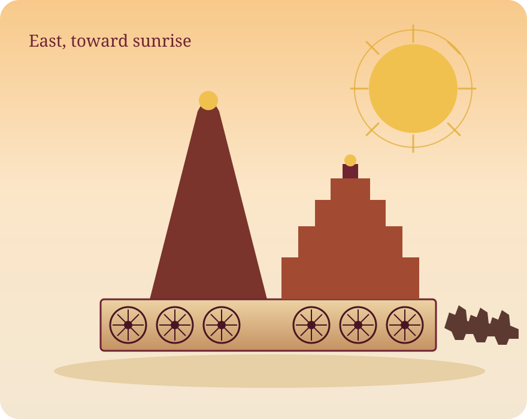

Chariot as a calendar
Seven horses are the seven days. Twenty-four wheels are the twenty-four hours, and in another reading the twenty-four fortnights. Twelve pairs are the twelve months. The numbers are the plan, not an ornament added afterwards.
Indian Knowledge Systems · Experiment 3
The Black Pagoda
A thirteenth-century stone chariot of the sun god Surya, on the Odisha coast. This prototype walks through its architecture, the astronomy built into the wheels, and the link between temple knowledge and ideas we still use in engineering.

01 — Context
The temple at Konark, near Puri, was built as the chariot of Surya. European mariners called it the Black Pagoda, to tell it apart from the whitewashed Jagannath temple at Puri.
It was raised in the thirteenth century under Narasimhadeva I of the Eastern Ganga dynasty, who ruled from 1238 to 1264, and dedicated to Surya. Temple tradition names the master builder as Bisu Maharana. The plan follows the Kalinga order: a sanctum under a tall curved tower (the rekha deul), an audience hall with a stepped roof (the jagamohana), and a dance hall, the natamandira, further east.
The building faces east so that the first light meets the sun god. Along the plinth are 24 carved wheels, each about three metres across, in twelve pairs. Seven horses stand at the eastern end. In 1984 UNESCO inscribed the Sun Temple as a World Heritage Site.
The great tower over the sanctum was already gone by the nineteenth century. What still holds the skyline is the jagamohana. In 1903–1905 that hall was filled with sand so its corbelled roof would not fall. The model in the next section rebuilds the missing tower only so the original idea can be discussed. It is not a measured replica.
02 — Model
Built in the browser from boxes, cylinders, and rings — no downloaded 3D file. Drag to rotate, scroll to zoom, and click a part. The buttons work if a pointer is awkward, and so do the arrow keys once the view is focused.
Horses face east, toward sunrise
Building the stone chariot…
Drag to rotate · scroll to zoom · click a gold marker or any wheel, horse, the hall, or the tower. After clicking the view: arrow keys rotate, + and − zoom, R resets.
03 — Timekeeping
Each wheel has eight major spokes. A day was divided into eight praharas, and 45° between spokes is exactly three hours if a shadow moves 15° an hour — the rate that follows from a 360° turn in 24 hours. The same rate gives a quarter of a degree per minute, which is the geometry behind the claim that a wheel can be read to the minute.
This demo treats one wheel as a vertical sundial. The sun travels the upper arc from sunrise at the left to sunset at the right. The shadow is drawn opposite the sun, across the lower half. Noon is the downward spoke. At 9:00 am the shadow is 45° off that spoke: one major spoke away, one prahara, three hours.
A wheel with eight spokes. The shadow leaves the noon spoke by 15 degrees each hour. Preset buttons jump to 9 am, noon, and 3 pm.
Solar time 12:00 pm
From the noon spoke 0.0° on the noon spoke
Reading On the 12:00 noon spoke
04 — Making
The temple is a Kalinga building planned as Surya’s chariot and faced east. The sanctum tower, the stepped audience hall, and the separate dance hall are the three main volumes. Under that symbolism is a real structure: laterite, khondalite, and iron.
Seven horses are the seven days. Twenty-four wheels are the twenty-four hours, and in another reading the twenty-four fortnights. Twelve pairs are the twelve months. The numbers are the plan, not an ornament added afterwards.
The platform is laterite. The carved body is mainly khondalite, a garnet-bearing rock that weathers dark — one reason the tower read as black from the sea. Wrought-iron beams, clamps, and dowels locked blocks together. Their rusting is part of why the fabric has been damaged.
Between the wheels the plinth is covered with figures cut almost to the edge of the block. The beds of those courses had to fit: a bad joint would not carry the next stone of a tower this size. The precision is structural as well as visual. The hall’s pidha roof stacks each course shorter than the one below, so the span and the weight both step inward.
A popular story says the tower was crowned with a magnet so strong it pulled compasses off course, and that the tower was brought down because of it. No such stone survives to be tested. What is solid is that the tower was tall enough to be a navigational mark — the Black Pagoda.
Twelve names, twelve pairs. The list follows the months of the Indian calendar; the temple’s own code simply says “twelve months.”
05 — Knowledge
The temple is a place where astronomy, building rules, sculpture, and arithmetic were made public. Each of those has a direct partner in a modern course.
Ritual time was read from the sun’s movement, and the day was split into praharas. The wheel is that idea cut in stone.
Earth rotates 360° in a mean solar day. Divide by 24 and the shadow’s rate is fixed. The canvas above uses that rate and no other.
Canonical practice set the east-facing sanctum, the sequence of halls, and the piled pidha roof.
A stepped pyramid shortens every span and keeps mass low in the building. That is why the hall is still standing and the slender tower is not.
Eight spokes, twelve pairs, twenty-four wheels: time laid out as angles, the way a prahara is a sector of the day.
A clock is an angle divided by 15. Once the spoke spacing is known, the reading is arithmetic, not a separate instrument.
Surya’s chariot, the horses, and the wheels put a cosmology where anyone on the plinth could see it.
Orientation, number, and image carry the content. The monument does not depend on a caption placed somewhere else.
06 — Plates
Photographs and a labelled drawing of the monument. The 3D view above is still a schematic; these plates are the real stone.


07 — Check
Every answer is on this page. The score is instant, and a wrong choice still shows the reason.
Question 1 of 5
Score